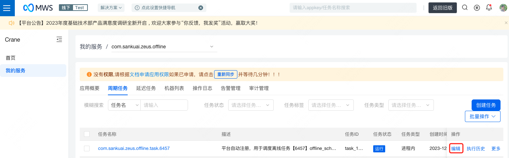
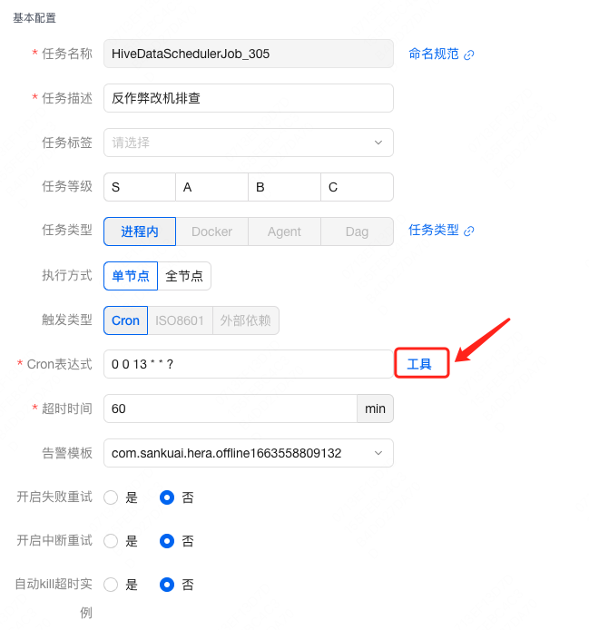
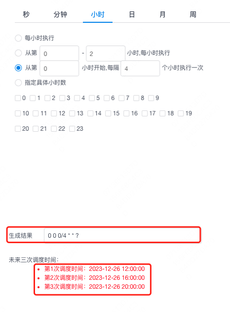

说明：crontab表达式配置
格式说明
周一到周三每天上午10:15执行作业
Cron表达式触发最为常见，以0 15 10 5 6 ?为例:
0 表示秒域
15 表示分钟域
10 表示小时域
5 表示日期域
6 表示月份域
问号? 表示星期(因与日期冲突，这里不指定，1表示周日，2表示周一,以此类推)
符号解释:
星号（*）：可用在所有字段中，表示对应时间域的每一个时刻，例如，星号在分钟字段时，表示“每分钟”。
问号（?）：该字符只在日期和星期字段中使用，它通常指定为“无意义的值”，相当于点位符。
减号（-）：表达一个范围，如在小时字段中使用“10-12”，则表示从10到12点，即10，11，12。
逗号（,）：表达一个列表值，如在星期字段中使用“MON，WED，FRI”，则表示星期一，星期三和星期五。
斜杠（/）：x/y 表达一个等步长序列，x 为起始值，y 为增量步长值。如在分钟字段中使用0/15，则表示为0，15，30和45秒，而5/15在分钟字段中表示5，20，35，50，你也可以使用 */y，它等同于 0/y。
- 星号*若在秒域则表示每秒执行，在分钟域表示每分钟执行，以此类推
-
由于天与星期域是冲突的，所以必须有一个不指定，使用英文问号表示
- 设置Cron时，调度间隔最好是要大于或者等于任务最大执行时长（离线引擎间隔不得小于1小时）
常见举例
|
表达式 |
含义 |
|---|---|
|
0 5 10 * * ? |
每天10:05 |
|
0 5 0 1 * ? |
每个月1号00:05 |
|
0 0 0 ? * 5,6 |
每周的周四和周五0点 |
|
0 10 9 ? * 1 |
每周日的9:10 |
|
0 0 0/2 * * ? |
从0点开始，每隔2小时 |
表达式验证
通过工具可查看后3次执行时间是否符合预期
|
步骤1 |
步骤2 |
步骤3 |
|---|---|---|
|
点击表达式测试地址，随便选择一个任务，进行编辑，进入步骤2  注：顶部提示的没有权限不影响测试操作，不需要申请权限 |
点击弹窗内【工具】按钮，进入步骤3  |
直接将自定义表达式贴到【生成结果】中，未来三次执行时间将会自动生成 --不会写表达式的也可以通过调整上面的参数生成表达式  |